Warning
Page en cours de construction
Perception catégorielle des phonèmes#
Le chapitre précédent nous a conduit à la conclusion que l’observation approfondie d’enregistrements de sons de parole n’était pas suffisante pour déterminer les mécanismes perceptifs impliqués dans la compréhension des phonèmes. Il est donc nécessaire de mettre en œuvre des expériences psychoacoustiques afin de tester directement la perception humaine.
Dans ce qui suit, nous allons employer diverses variantes de la méthode des stimuli constants pour identifier les caractéristiques acoustiques (ou indices acoustiques) qui permettent au système auditif humain de distinguer les consonnes /b/ et /d/. Bien entendu, ce contraste particulier a été choisi à titre d’illustration, et les mêmes approches peuvent être déployées pour explorer la perception de n’importe quel phonème.
Comme nous l’avons vu au chapitre 1, la plupart des méthodes psychophysiques nécessitent au préalable de choisir une “dimension d’intérêt”, c’est à dire un paramètre physique dont nous souhaitons connaître l’influence sur la perception. Dans un premier temps, nous commençerons par nous interroger sur la contribution des différentes fréquences dans l’intelligibilité des sons de parole avant d’investiguer des détails acoustiques plus fins. L’approche par filtrage va nous permettre d’identifier les fréquences du son essentielles à sa compréhension.
Approche par filtrage#
La toute première expérience de psychoacoustique visant à étudier la perception des phonèmes fut mise au point par Harvey Fletcher dans les années 1920, alors qu’il travaillait aux Bell Laboratories. Ce centre de recherche, pionnier dans le domaine des télécommunications, disposait alors de systèmes électroniques innovants pour l’époque qui permettaient de filtrer les sons selon des paramètres de fréquence ajustables. Fletcher comprit rapidement le potentiel de ces outils pour explorer la manière dont les humains perçoivent la parole, marquant ainsi le début d’une approche expérimentale rigoureuse en phonétique expérimentale.
Son approche reposait sur une méthode de filtrage progressif : en supprimant progressivement des bandes de fréquences, il cherchait à identifier les composantes fréquentielles critiques pour la compréhension des sons de la parole. Pour ce faire, il rassembla un grand nombre d’enregistrements de syllabes consonne-voyelle différant par la consonne initiale (/ba/, /da/, /ga/, /pa/, /ta/, /ka/, /fa/, /sa/, etc.). Chaque enregistrement fut ensuite soumis à différents filtrages passe-haut ou passe-bas, c’est à dire en ne conservant que les informations au-dessus ou en-dessous d’une certaine fréquence de coupure donnée. Les volontaires devaient écouter ces stimuli filtrés, dans un ordre aléatoire, et identifier à chaque fois le phonème perçu.
L’exemple suivant illustre le principe de cette expérience historique. Pour les besoins de cette démo, je n’ai utilisé qu’un unique enregistrement de parole : un “ba” clairement intelligible. En appliquant un filtrage passe-bas avec des fréquences de coupure de plus en plus basses, nous supprimons progressivement les fréquences aigües du signal, créant ainsi un continuum acoustique le long de notre dimension d’intérêt. Écoutez ces sons de plus en plus altérés en essayant de déterminer à partir de quel point du continuum vous ne parvenez plus à identifier le “ba” initial.
{kind=link}
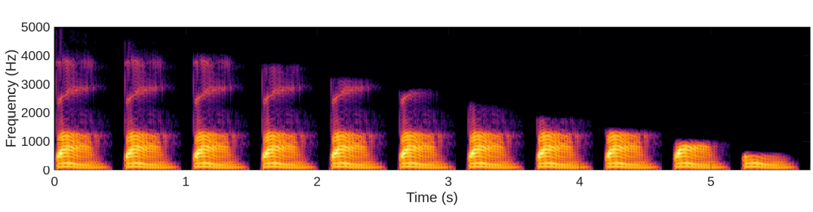
Fig. 96 Continuum de parole filtrée passe-bas. Le premier spectrogramme correspond à la syllabe “ba” clairement intelligible. Les fréquences hautes sont ensuite progressivement filtrées par pas successifs (une nouvelle bande de 450 Hz est retirée à chaque stimulus), de sorte que le dernier stimulus ne conserve que les fréquences de 0 Hz à 500 Hz.#
La plupart des auditeurs et auditrices rapportent que la qualité du son se dégrade progressivement le long du continuum, mais que le “ba” devient véritablement inintelligible à partir du 9ème stimulus – c’est à dire quand la fréquence de coupure atteint 1400 Hz. Pour comprendre la raison de cette transition abrupte, la figure suivante représente les positions des formants F1, F2, F3 et F4 pour l’ensemble des stimuli du continuum.
{kind=link}
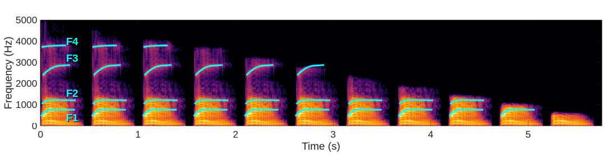
Fig. 97 Même continuum que Fig. 96, avec les trajectoires des formants F1, F2, F3 et F4 représentés en bleu.#
[Fletcher, 1922; Li, Menon & Allen, 2010]
{kind=link}
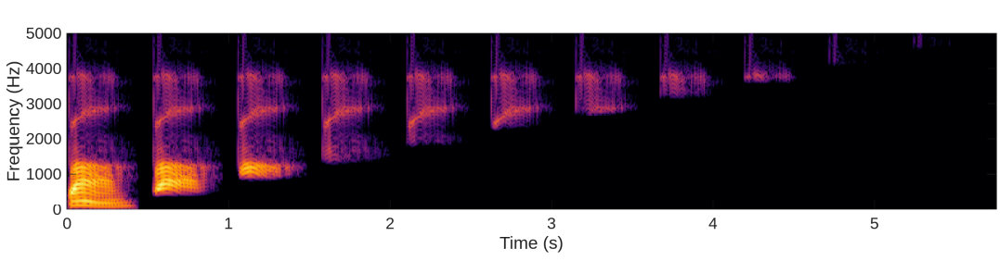
Fig. 98 Continuum de parole filtrée passe-haut. Le premier spectrogramme correspond à un son “ba” clairement intelligible. Les fréquences basses sont ensuite progressivement filtrées par pas successifs (une nouvelle bande de 450 Hz est retirée à chaque stimulus), de sorte que le dernier stimulus ne conserve que les fréquences de 4550 Hz à 5000 Hz.#
{kind=link}
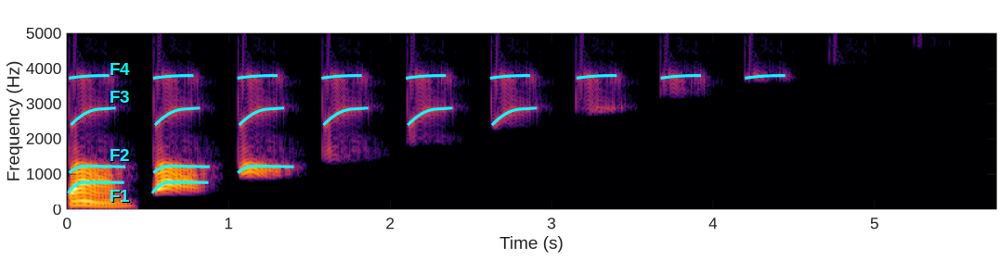
Fig. 99 Même continuum que Fig. 98, avec les trajectoires des formants F1, F2, F3 et F4 représentés en bleu.#
Stimuli : syllabes consonne+/a/, filtrées passe-bas ou passe-haut. Dimension : fréquence de coupure du filtrage Tâche : intelligibilité Méthode : méthode des stimuli constants Paradigme : -
{kind=link}
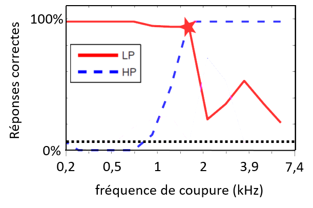
Fig. 100 XXX.#
Quand le F2 disparait, /b/ n’est plus intelligible.
{kind=link}
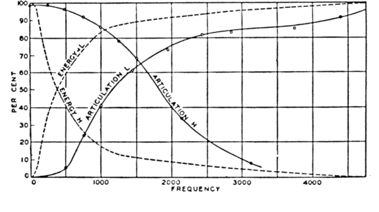
Fig. 101 XXX.#
{kind=link}
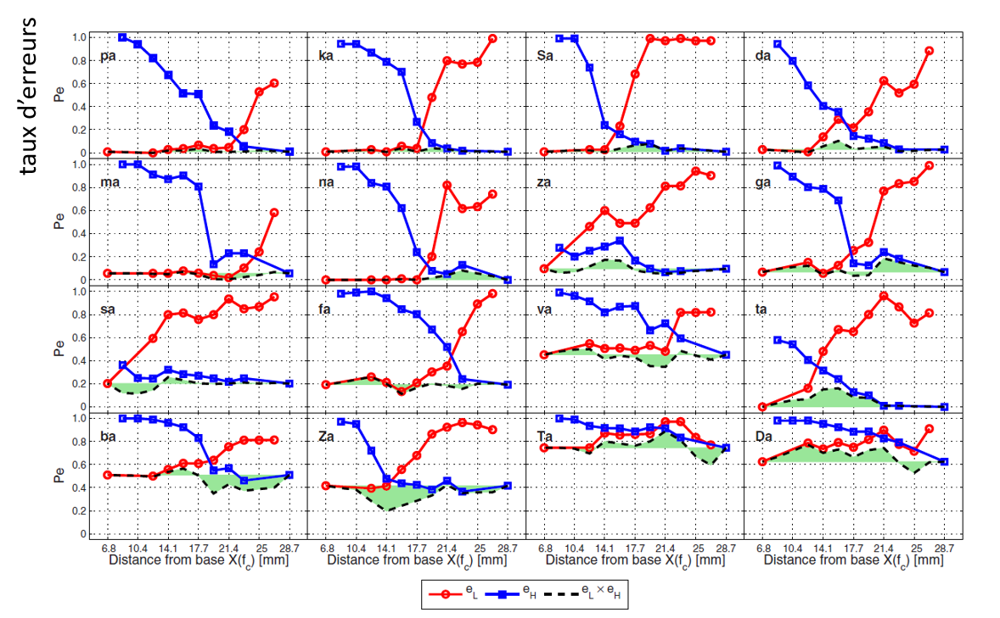
Fig. 102 XXX.#
Approche par synthèse vocale#
[Liberman, Delattre, Cooper, 1954]
Evaluer le rôle de la transition du formant F2 dans dans l’identification du phonème /b/… …En utilisant un Pattern Playback Pattern Playback : l’un des premiers synthétiseurs de parole [Cooper, Liberman, Borst, 1951]
{kind=link}
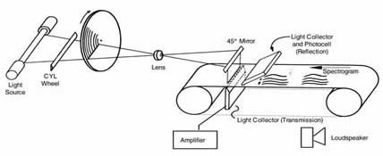
Fig. 103 XXX.#
Stimuli : syllabes synthétiques consonne+/a/ Dimension : fréquence d’attaque du 2ème formant. Tâche : catégorisation /b/-/d/ Méthode : méthode des stimuli constants Paradigme : yes/no
{kind=link}
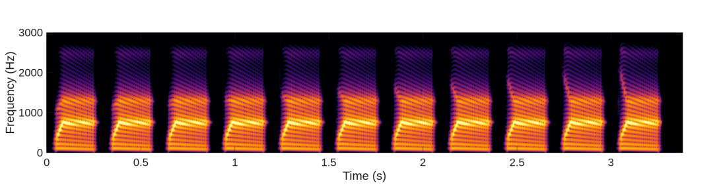
Fig. 104 Continuum de parole synthétique. Le premier son correspond à un “ba” généré avec un algorithme de synthèse rudimentaire (synthétiseur de Klatt). Un seul des paramètres acoustiques de ce stimulus est ensuite varié : la fréquence d’attaque du F2. Celle-ci est fixée à 900 Hz dans le premier stimulus, puis évolue par pas de 150 Hz jusqu’à atteindre 2400 Hz dans le dernier stimulus. En conséquence, la pente d’attaque du F2 est montante au début du continuum, mais descendante à la fin.#
{kind=link}
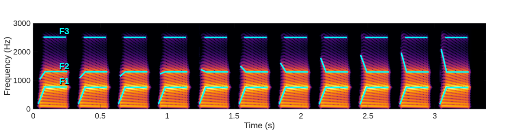
Fig. 105 Même continuum que Fig. 104, avec les trajectoires des formants F1, F2 et F3 représentés en bleu.#
Quand on modifie la transition de F2, le /b/ devient /d/ puis /g/.
L’approche par continuum de parole synthétique a été généralisée à de nombreuses questions, avec des stimuli synthétiques de plus en plus réalistes.
{kind=link}
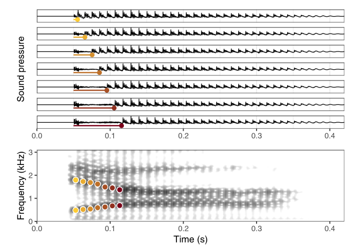
Fig. 106 .#
{kind=link}
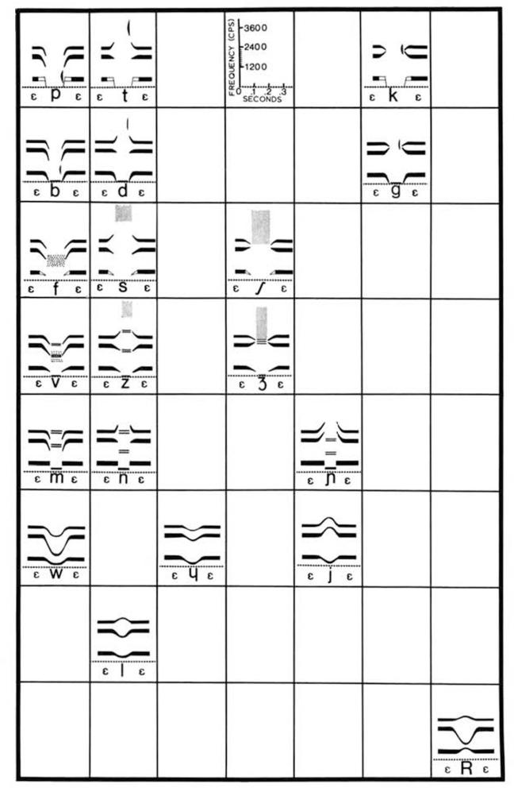
Fig. 107 .#
discrimination entre deux stimuli adjacents
Les différences de F2 ne sont pas perçues (performance de discrimination ≈ 50%), sauf entre deux catégories.
{kind=link}
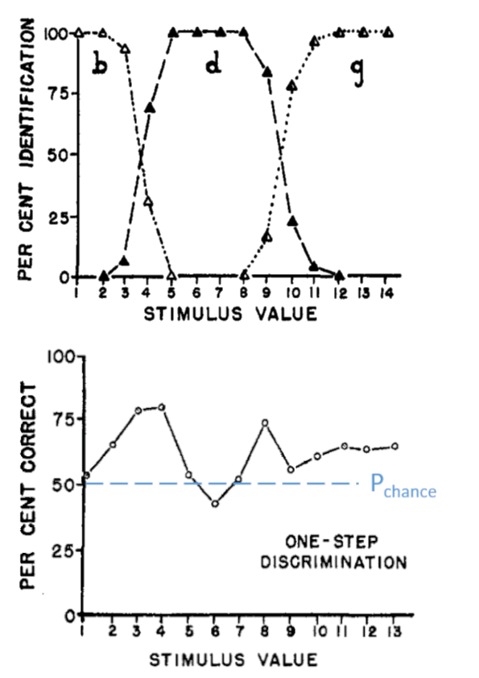
Fig. 108 .#
Perception catégorielle : définition
La fonction psychométrique de catégorisation de phonème a une très forte pente ( peu de stimuli ambigus). Le seuil à 50% s’appelle frontière phonémique.
La discrimination au niveau d’une frontière phonémique est facilitée. Au contraire, les exemplaires d’une même catégorie phonémique sont difficiles à différencier.
{kind=link}
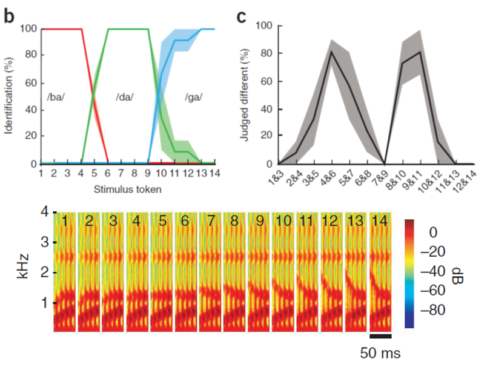
Fig. 109 .#
Perception catégorielle de la parole : La perception des phonèmes (catégorisation et discrimination) présente des discontinuités marquées au niveau des frontières phonémiques. Permet de subdiviser l’espace acoustique ! (comme figure 91)
Speech sounds are treated discontinuously; a sound that is acoustically halfway between bat and pat does not mean something halfway between batting and patting. (Pinker, Language instinct)
Perception catégorielle : un mécanisme perceptuel très général
{kind=link}
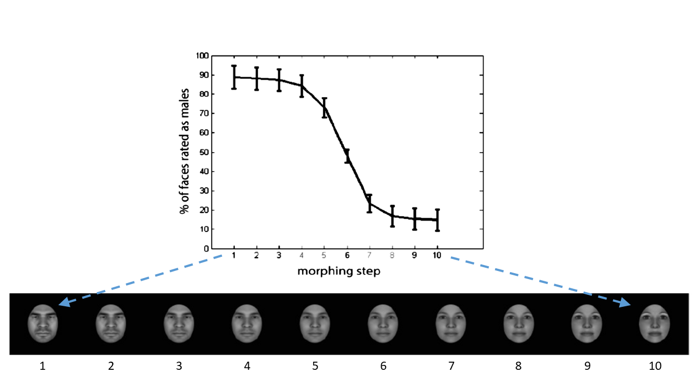
Fig. 110 .#
Certaines catégories (mais pas toutes) dépendent de la culture : P.ex., les différentes langues n’ont pas le même répertoire de phonèmes debt-death-deaf (/t/-/θ/-/f/) dough-thought-fought (/d/-/θ/-/f/) bit-beat (/ɪ/-/iː/) … donc pas les mêmes frontières phonémiques.
Les frontières sont apprises au cours du développement de l’enfant (dans les 6 premiers mois de la vie, capacités de discrimination des phonèmes non-spécifiques à la langue).
{kind=link}
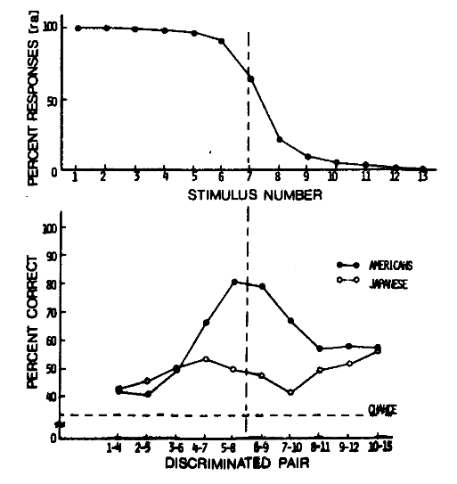
Fig. 111 .#
Les catégorisations spontanées surviennent en permanence dans notre cerveau et dépendent non seulement de notre langue, mais aussi de notre culture. Une catégorie réunit utilement un ensemble d’éléments. Elle rend disponibles des propriétés qui ne sont pas immédiatement perceptibles. Sans perception catégorielle, pas de langage ni de pensée organisée.
Les catégorisations spontanées effectuées par et dans nos cerveaux surviennent en permanence et dépendent non seulement de notre langue, mais aussi de notre époque, de notre culture et de notre état d’âme. Elles s’écartent considérablement du stéréotype de ce qu’est la catégorisation. En effet, la vision intuitive de ce mécanisme psychologique est qu’il consiste à ranger des entités de l’environnement dans des catégories mentales […]
Une catégorie réunit un ensemble d’éléments avec profit pour l’être qui la possède. Elle rend disponibles des propriétés qui ne sont pas immédiatement perceptibles. […]
Cela les a conduits à des théories de la catégorisation qui récusent le rôle des définitions précises et font plutôt appel à la proximité soit avec des prototypes, entités mentales génériques stockées en mémoire et qui résument de façon concise toutes les expériences antérieures qu’une personne a eues avec la catégorie en question, soit avec l’ensemble de tous les exemplaires de la catégorie qui ont déjà été rencontrés […]
l’origine de ces efforts se trouve l’idée novatrice de catégories non homogènes, dotées de degrés forts ou faibles d’appartenance, ce qui revient à distinguer entre membres plus centraux et moins centraux d’une catégorie. […]
La diversité des niveaux d’abstraction auxquels il peut être approprié de catégoriser est due à la fois à l’importance que prennent le fait de distinguer et celui de regrouper. Durant le repas, on distingue son assiette et celle du voisin, puis elles sont confondues dans le buffet. Un réfrigérateur et un piano ont des usages bien différents, mais pour des déménageurs, il s’agira avant tout de meubles encombrants.[…]
priorité lorsque l’on aborde n’importe quel domaine inconnu est de se familiariser avec les entités qui font partie du domaine et de savoir les différencier, parce que pour connaître il faut reconnaître. En ce sens, catégoriser, c’est distinguer. […]
une personne demande à une autre quelque chose d’aussi anodin que : « Tes frites sont bonnes ? », son interlocuteur devrait en toute rigueur lui répondre : « Les six que j’ai mangées jusqu’à présent étaient vraiment excellentes, mais du fait que je n’ai pas goûté les autres dans mon assiette, je ne suis pas en mesure de dire quoi que ce soit avec certitude.
Les catégories sont des boîtes ; catégoriser, c’est mettre dans une boîte. C’est à cette analogie naïve qu’est due la croyance quasiment irrépressible évoquée au chapitre 4 selon laquelle les objets (et les situations) qui nous entourent auraient tous une catégorie privilégiée d’appartenance qui constituerait leur identité intrinsèque. […] En effet, il se trouve que l’approche de la catégorisation qui était partagée par la quasi-totalité des psychologues expérimentalistes jusque dans le milieu des années 1970, lorsque la psychologue Eleanor Rosch a publié des travaux rendant intenable cette position, était très similaire à cette analogie naïve. Transposition « logico-mathématique » de la vision naïve, elle considérait l’appartenance catégorielle comme déterminée par un ensemble de propriétés précises, nécessaires et suffisantes : on fait partie de la catégorie (on est dans la boîte) si et seulement si on a les propriétés requises ; sinon on est en dehors de la boîte.
(Hofstadter, l’Analogie)
Sans cette capacité d’abstraction nos vies ressembleraient à celle d’Irénée Funes, personnage d’une nouvelle de Jorge Luis Borges, pour qui une chute de cheval eut la conséquence funeste qu’il « se rappelait chaque feuille de chaque arbre de chaque bois, mais […] était presque incapable d’idées générales platoniciennes. Non seulement il lui était difficile de comprendre que le symbole générique chien embrassât tant d’individus dissemblables et de formes diverses ; cela le gênait que le chien de trois heures quatorze (vu de profil) eût le même nom que le chien de trois heures un quart (vu de face) ». À l’inverse de Funes, l’être humain a naturellement la faculté d’abstraire pour faire face à la diversité du monde (Hofstadter, l’Analogie)
Nos catégories sont de grandes simplifications des structures de l’univers mais, bien choisies, elles sont extraordinairement efficaces pour nous permettre de sonder et prévoir ce qui se passe autour de nous. (boucle étrange)
“Our sensory experience is informationally rich and profuse in a way that our cognitive utilization of it is not.” (Dretske, 1981b, p.146).
{kind=link}
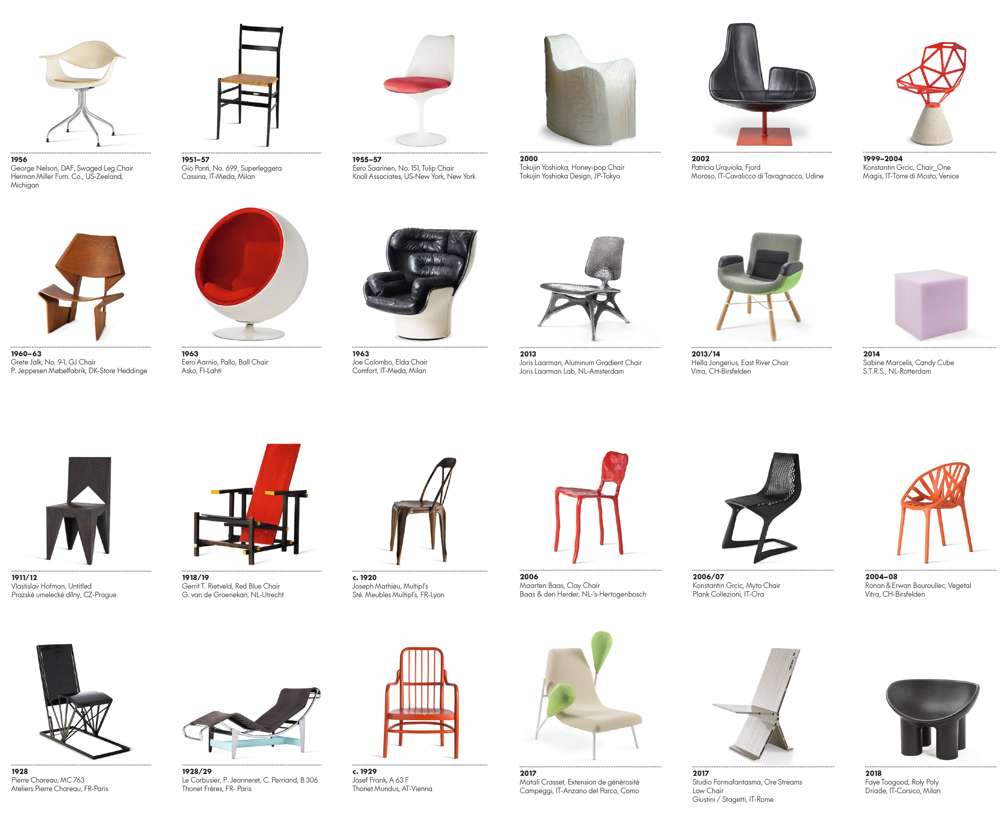
Fig. 112 .#
{kind=link}
Fig. 113 .#
Conclusions: La perception catégorielle distord l’espace perceptuel. Elle revient à ignorer les variations non pertinentes (au sein d’une catégorie)… …tout en améliorant la sensibilité aux variations pertinentes (entre catégories). Elle réalise ainsi une forme de conversion analogique-numérique (espace physique continu → espace perceptuel discret) Les formants et transition des formants jouent un rôle fondamental dans la reconnaissance des phonèmes (p.ex. attaque du F2 pour /b/-/d/-/g/) Le problème du manque d’invariance subsiste.